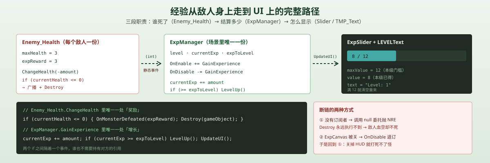
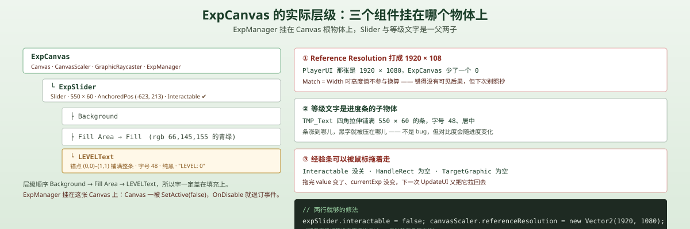
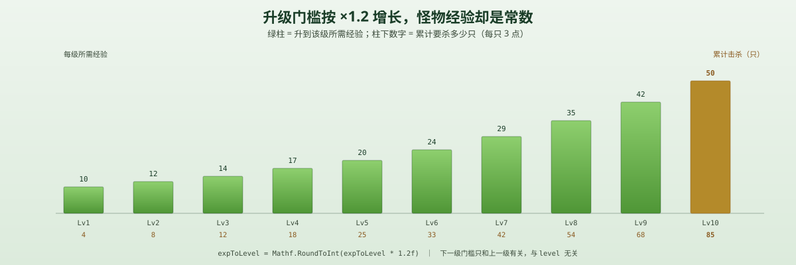

一句话说清这天的内容
把「打怪」和「变强」接起来：敌人血量归零时，Enemy_Health 用静态事件广播自己值多少经验（expReward = 3）；ExpManager 订阅这个事件，把经验累加到 currentExp，够了就 level++ 并把下一级门槛 expToLevel 乘 1.2，最后把 ExpSlider 的 maxValue / value 和 LEVELText 一起重画。
整条链路只传一个 int：敌人不认识玩家，玩家也不认识敌人。
脚本关系
| 脚本 | 角色 | 关键变化 |
|---|---|---|
Enemy_Health | 改 | 加 expReward、delegate MonsterDefeated(int)、static event OnMonsterDefeated；ChangeHealth 里血量归零时先广播、再 Destroy |
ExpManager | 新 | 订阅事件、累计经验、升级公式、刷 expSlider 与等级文本 |
StatsManger | 未改 | 升级不碰它一个字（今天最大的洞） |
StatsUI | 未改 | Esc 面板上的数字依然是启动那一刻的快照 |
Player_Combat | 未改 | 仍然是 ChangeHealth(-damage) + Knockback(...) 两行 |

调用链（击杀结算）：
Slash → Player_Combat.Attack() → 动画事件 → DealDamage() → OverlapCircleAll → Enemy_Health.ChangeHealth(-1) → currentHealth <= 0 → OnMonsterDefeated(3) → ExpManager.GainExperience(3) → currentExp += 3 → 够了就 LevelUp() → expToLevel = round(×1.2) → UpdateUI() → expSlider.maxValue / value + currentLevelText.text
调用链（调试加经验）：
Return 键 → ExpManager.Update() → GainExperience(2) → 同上
为什么用事件，而不是在 Player_Combat 里顺手加经验
最省事的写法是在 DealDamage() 里加一行 expManager.GainExperience(3)。今天的场景确实只有玩家能杀怪，这么写也能跑。但它把两件无关的事绑死了：
- 「敌人死了」是敌人的事实，
Enemy_Health本来就知道 - 「给多少」是敌人的配置，所以
expReward写在敌人身上而不是写在玩家身上 - 「怎么用」是玩家的规则，
ExpManager才该知道
如果由挥剑的一方来发经验，等明天加了陷阱、毒、坠落伤害、召唤物，每一处伤害源都得知道经验系统——漏一个就出现「被陷阱打死的怪不给经验」。
| 直接调用 | 拿单例 | 事件（现在） | |
|---|---|---|---|
| 调用方需要什么 | 一个 ExpManager 引用 | ExpManager.Instance | 什么都不需要 |
| 新增伤害源 | 每个源都要改 | 每个源都要写一行 | 零改动 |
| 谁也不知道谁 | ✗ | ✗ | ✓ |
| 调试难度 | 低 | 低 | 高（看不到谁订阅了） |
代价是事件是全局广播，没有 target：任何订阅者都能收到任何一只怪的死讯。今天只有一个玩家、一份经验，所以无所谓；等有「队友分经验」「Boss 只给队长」这类规则，就得改成带来源参数的事件（OnMonsterDefeated(Enemy_Health source, int amount)）。
Enemy_Health：把「死亡」变成一次广播
public class Enemy_Health : MonoBehaviour
{
public int expReward = 3;
public delegate void MonsterDefeated(int amount);
public static event MonsterDefeated OnMonsterDefeated;
public int currentHealth;
public int maxHealth;
private void Start()
{
currentHealth = maxHealth;
}
public void ChangeHealth(int amount)
{
currentHealth += amount;
if (currentHealth > maxHealth) { currentHealth = maxHealth; }
if (currentHealth <= 0)
{
OnMonsterDefeated(expReward);
Destroy(gameObject);
}
}
}设计 1：delegate + static event = 一个不用持有引用的插座
public delegate void MonsterDefeated(int amount); 先声明一个「形状」：收一个 int、不返回东西。event 再把这个形状做成只有「+= / -=」两种操作的东西——外部不能 OnMonsterDefeated = null 把别人的订阅清掉。
用 static 的理由很具体：经验是玩家的全局进度，不属于某一只敌人。如果事件是实例成员，ExpManager 就得在每只怪出生时挨个订阅、死亡时再挨个退订，而且 Destroy 之后那个委托就悬空了。静态事件把它变成「一个类型级别的广播站」——敌人只管喊，谁听谁自己负责。
delegate 也可以写成 Action<int>，两者等价；Action<int> 少一个类型声明，但教程里用自定义 delegate 是为了让参数名（amount）在 IDE 提示里可见。
设计 2：先广播，再销毁
顺序是 OnMonsterDefeated(expReward); 然后 Destroy(gameObject);。
反过来写会怎样？Destroy 之后对象在帧末才真正消失，所以严格说也不会立刻报错——但那是在赌「销毁是延迟的」这个实现细节。「发奖励」必须在「我不存在了」之前完成，这是语义，不是巧合。
坑 1：没有订阅者时，敌人变成不死的
OnMonsterDefeated(expReward); 没有 ?.。C# 的委托本质是一个字段，字段为 null 时调用就是 NullReferenceException。
后果比「报个错」严重得多：
- 异常在
ChangeHealth里抛出 - 后面的
Destroy(gameObject)永远不会执行 - 敌人血量已经 ≤ 0，但它还活着，还在追你、还在打你
- 下一次命中继续抛同一个异常，继续不掉血（其实掉了，只是死不掉）
一个字的修法：
OnMonsterDefeated?.Invoke(expReward);
Destroy(gameObject);同理，Awake / Start 里的顺序、场景加载顺序、OnDisable 退订——只要有一个时刻「事件有订阅者」这个条件不成立，敌人就会变成不死的。这不是边界情况，是默认失败模式。
坑 2：静态事件 + OnDisable 退订 = 关掉 HUD 就打不死怪
ExpManager 是挂在 ExpCanvas 这个物体上的（不是 Player，也不是一个空 GameManager）。它的订阅写在 OnEnable / OnDisable 里：
private void OnEnable() { Enemy_Health.OnMonsterDefeated += GainExperience; }
private void OnDisable() { Enemy_Health.OnMonsterDefeated -= GainExperience; }于是这条链变成：
ExpCanvas.SetActive(false) → OnDisable → 退订 → 坑 1 复活 → 打怪不掉血、敌人不死
而「关掉 HUD」是很正常的操作（过场、对话、截图）。把逻辑脚本挂在 UI 物体上，等于把逻辑的生命周期交给了 UI 的显隐。
正确的挂法是挂在 Player 或一个空 GameManager 上，让它持有 expSlider / currentLevelText 两个引用；UI 显隐只影响显示，不影响结算。

ExpManager：累加、升级、刷 UI
public class ExpManager : MonoBehaviour
{
public int level;
public int currentExp;
public int expToLevel = 10;
public float expGrowthMultiplier = 1.2f;
public Slider expSlider;
public TMP_Text currentLevelText;
private void Start()
{
UpdateUI();
}
private void Update()
{
if (Input.GetKeyDown(KeyCode.Return))
{
GainExperience(2);
}
}
private void OnEnable()
{
Enemy_Health.OnMonsterDefeated += GainExperience;
}
private void OnDisable()
{
Enemy_Health.OnMonsterDefeated -= GainExperience;
}
public void GainExperience(int amount)
{
currentExp += amount;
if (currentExp >= expToLevel)
{
LevelUp();
}
UpdateUI();
}
private void LevelUp()
{
level++;
currentExp -= expToLevel;
expToLevel = Mathf.RoundToInt(expToLevel * expGrowthMultiplier);
}
public void UpdateUI()
{
expSlider.maxValue = expToLevel;
expSlider.value = currentExp;
currentLevelText.text = "Level: " + level;
}
}设计 1：expToLevel 是「本级门槛」，不是「累计经验」
这是整个系统里最容易写错的一处：currentExp 的含义被定义成本级已经拿到多少，而不是总量。所以：
- 升级时
currentExp -= expToLevel（扣掉刚跨过的那道坎，剩下的带进下一级） expSlider.maxValue = expToLevel（进度条满格 = 本级满）LevelUp()里先减、再乘，两步用的都是旧的expToLevel
顺序写反（先乘再减）的后果：第一次升级会扣 12 而不是 10，玩家凭空少 2 点经验。这种错误不会崩，只会让每次升级都「吞一点」，非常难查。
设计 2：升级判定用 if，而不是 while——这是错的
if (currentExp >= expToLevel) { LevelUp(); } // 一次只升一级今天没炸，因为每只怪只给 3 点、最低门槛 10 点，一次事件不可能跨两级。
但它埋了一个具体的雷。假设明天加一个「经验卷轴 +100」：
| 步骤 | currentExp | expToLevel |
|---|---|---|
| 吃卷轴 | 0 → 100 | 10 |
if 成立，升一级 | 100 − 10 = 90 | round(10×1.2) = 12 |
UpdateUI | value 被 Slider 夹到 12（满格） | maxValue = 12 |
结果：currentExp 停在 90，而门槛只有 12。玩家看到的是「条满了、等级 +1」，实际有 7 级经验压在口袋里。之后每杀一只怪，if 只让它升一级，得杀 7 只才能把账补平；如果这是最后一只怪，就永远停在 90/12。
正确写法是 while——一次事件可以连升多级：
while (currentExp >= expToLevel)
{
LevelUp();
}设计 3：UI 刷新集中在一个出口
UpdateUI() 里三行永远一起执行：maxValue、value、text。只改其中一个，就会出现「条满了但等级没变」或者「等级跳了但条还是空的」。
这和 Day 6 的 StatsUI 形成了对照：那边的 UpdateAllStats() 只在 Start() 里调一次，属性面板的数字从开局起就再也不变；这边只在「经验变化」时刷，所以永远是准的。同样叫「刷 UI」，一个是启动快照，一个是事件驱动——差别只在调用点。
数值：门槛 10 起步、每级 ×1.2，怪物固定给 3
场景里的实际数字：敌人 maxHealth = 3、expReward = 3，玩家 damage = 1 ——一刀 1 点、三刀一只，cooldown = 2f 意味着最快也要 4 秒左右一只。

| 升到 | 本级门槛 | 累计经验 | 累计击杀（3/只） |
|---|---|---|---|
| Lv1 | 10 | 10 | 4 |
| Lv2 | 12 | 22 | 8 |
| Lv3 | 14 | 36 | 12 |
| Lv4 | 17 | 53 | 18 |
| Lv5 | 20 | 73 | 25 |
| Lv6 | 24 | 97 | 33 |
| Lv7 | 29 | 126 | 42 |
| Lv8 | 35 | 161 | 54 |
| Lv9 | 42 | 203 | 68 |
| Lv10 | 50 | 253 | 85 |
注意 Mathf.RoundToInt 把 1.2 的乘法打成了台阶：10 → 12 → 14 → 17 → 20 → 24 → 29 → 35 → 42 → 50，差值 2, 2, 3, 3, 4, 5, 6, 7, 8。前几级看着像线性，其实是指数——Lv50 的门槛会到 7000 以上。
坑 3：level 从 0 开始
场景里 level: 0，占位文本是 LEVEL: 0，第一次升级变 1。
人的直觉是「一开始就是 1 级」，所以后面所有依赖 level 的地方都会差 1：显示、掉落表、技能解锁条件、存档。要么把初始值设成 1，要么在所有显示处 level + 1——两种都行，但必须统一，混着来就是「角色 1 级时游戏认为你是 0 级」。
坑 4：'LEVEL: 0' 和 "Level: 1" 不是同一个字符串
场景里 LEVELText 的占位是全大写的 LEVEL: 0，而代码写的是 "Level: " + level——大小写不一致。
平时看不出来，因为 Start() 紧接着 UpdateUI() 把它覆盖掉了。但只要 ExpManager 没挂、currentLevelText 没拖、或者 Start 之前有一帧显示，玩家看到的就是 LEVEL: 0。
这和 Day 6 的 Strenth: 00 是同一类问题：占位文案要写成明显是占位的格式（Level: --），写成看起来像真数据的 LEVEL: 0，出问题时反而不好判断到底哪一版是对的。
坑 5：Update 里的 Return 调试键
Input.GetKeyDown(KeyCode.Return) 直接写在 Update 里，没有 #if UNITY_EDITOR。两个后果：
- 发布版本里它也生效——玩家按回车就能白拿经验。
- 暂停时也能用。Day 6 的
StatsUI用Time.timeScale = 0暂停，但timeScale不拦Update，所以「开着 Esc 面板按住回车刷经验」是成立的：世界静止，经验条在涨。
更现实的问题是：它是目前唯一稳定的经验来源。场景里只有一只 Enemy_Torch，打死后不会重生，所以想看到升级只能按回车。
HUD：一个 Slider + 一段文字
ExpCanvas 上的结构很薄：
ExpCanvas（Canvas + CanvasScaler + GraphicRaycaster + ExpManager）
└ ExpSlider（Slider，550×60，AnchoredPosition (-623, 213)）
├ Background
├ Fill Area → Fill（青绿 rgb 66,145,155）
└ LEVELText（TMP_Text，48 号，纯黑，铺满整条）为什么用 Slider 而不是 Image.fillAmount
Slider | Image.fillAmount | |
|---|---|---|
| 设「满格是多少」 | maxValue，直接写成门槛 | 要自己 currentExp / (float)expToLevel |
| 设「现在多少」 | value，单位就是经验点 | 要自己算比例 |
| 额外能力 | 键盘/手柄导航、wholeNumbers、事件 | 只有一条填充 |
| 代价 | 默认是「可交互控件」 | 无 |
现在只用到了「设两个数」这一半，代价那一半（坑 6）却没关掉。
坑 6：经验条可以被鼠标拖着走
ExpSlider 的 Slider 组件里：
m_Interactable: 1
m_HandleRect: {fileID: 0}
m_TargetGraphic: {fileID: 0}Interactable = 1→ 它能接收点击和拖拽HandleRect = 0→ 没有滑块把手，但Slider.OnPointerDown只检查IsInteractable()，拖拽会退回到fillRect上算TargetGraphic = 0→ 连「按下变灰」的反馈都没有
结果是：鼠标按住经验条左右一拖，value 就变了，而 currentExp 一点没变。下一次 GainExperience → UpdateUI() 又把它拉回去——表现出来是「经验条莫名其妙跳一下」。
修法就一行：expSlider.interactable = false;（或者在 Inspector 里把 Interactable 取消勾选）。
坑 7：参考分辨率 1920×108
ExpCanvas 的 CanvasScaler：
m_UiScaleMode: 1
m_ReferenceResolution: {x: 1920, y: 108}
m_ScreenMatchMode: 0
m_MatchWidthOrHeight: 0而同一场景的 PlayerUI 是 {x: 1920, y: 1080}——少打了一个 0。
这个错今天没有可见后果，因为 m_MatchWidthOrHeight: 0 表示「按宽度匹配」，高度值压根不参与缩放计算。但它是个典型的「看起来像 bug、实际不是」的例子：
- 如果哪天把
Match改成 1（按高度），108会让整张 Canvas 放大十倍 - 如果哪天复制这个 Canvas 做新 HUD，错误会被一起复制走（Day 6 的
StatsManger拼写就是这么蔓延的）
坑 8：等级文字是进度条的子物体
LEVELText 的 m_Father 就是 ExpSlider，锚点 (0,0)–(1,1) 铺满整条 550×60 的进度条，字号 48、纯黑、居中。同级顺序是 Background → Fill Area → LEVELText，所以文字永远盖在填充色上。
设计上这不算错——「LEVEL: 3」压在条中间是常见的 HUD 做法。但它有两个副作用：
- 字号 48 在 60 像素高的条里，上下只剩 6 像素余量，中文或换字体就会溢出
- 填充涨到文字后面，黑字压在青绿上，对比度随进度变化（0% 时黑字压深灰，100% 时压青绿）
想要「条 + 条右侧文字」的经典布局，文字应该放在 ExpSlider 外面（父级是 ExpCanvas，或者套一个 HorizontalLayoutGroup），而不是塞进条里。
整体设计思路
1. 事件驱动 vs 轮询
| 事件（现在） | Update 里轮询 | |
|---|---|---|
| 实时性 | 立即 | 最多晚一帧 |
| 空闲开销 | 零 | 每帧一次判断 |
| 漏订阅的后果 | 静默失效（坑 1） | 不存在 |
| 调试 | 难（看不见订阅者） | 容易（打日志就行） |
经验这种「低频、有意义」的变化适合事件；「每帧都在变」的东西（比如血条跟随）适合轮询。判断标准是「变化次数」而不是「代码好不好看」。
2. 静态事件 vs 单例 vs 直接引用
| 静态事件（现在） | ExpManager.Instance | 直接拖引用 | |
|---|---|---|---|
| 敌人需要认识谁 | 只有自己的 delegate | ExpManager 类型 | ExpManager 实例 |
| 多敌人 | 天然支持 | 支持 | 每只怪都要拖一次 |
| 生命周期 | 跟类型走，最长 | 跟场景走 | 跟引用走 |
| 可测试性 | 差（全局广播） | 差（全局状态） | 好 |
「静态事件」和「单例」解决的是同一个问题的两面：单例是拉（我去拿），事件是推（你来送）。现在的组合是「敌人推、玩家拉自己的数据」，方向是对的。
更彻底的解耦是把事件挪到一个中立的地方：GameEvents.OnMonsterDefeated 静态类，或者 Unity 官方推荐的 ScriptableObject 事件通道。这样 ExpManager 连 Enemy_Health 这个类型都不用认识——今天它为了拿事件，using 里其实已经绑定了敌人。
3. ×1.2 乘法 vs 查表
| 乘法（现在） | 手写表 / AnimationCurve | |
|---|---|---|
| 代码量 | 1 行 | 一张表 |
| 无限等级 | 天然支持 | 要写到多少级为止 |
| 数值可控 | 差（指数量级说炸就炸） | 好（策划能直接改） |
| 可读性 | expToLevel * 1.2f | {10, 12, 14, 17, 20, ...} |
1.2 是「先让它涨起来」的占位，不是调过的数值。等有 10 种怪、每只给不同经验，就会需要一张「等级 → 门槛」的表或者曲线，而不是一个魔数。
4. 为什么升级不加属性——以及为什么这不完全是 bug
LevelUp() 里只动了 level、currentExp、expToLevel 三个字段，StatsManger 一个字没碰。所以升到 10 级，攻击力还是 1、血量还是 20、移速还是 5——升级的全部意义是「经验条归零、数字 +1」。
今天这样是对的：这一天的目标是「经验能流动」，不是「数值平衡」。但一旦要加，别在 LevelUp() 里直接改 StatsManger.Instance.damage——那会让 Day 6 的 StatsUI 继续显示旧值（它的洞 1 还没补）。正确的链条是：
升级 → 属性增长（StatsManger 暴露 AddDamage 之类的方法）→ StatsUI 订阅刷新
明天要补的洞
- 升级不加属性：
LevelUp()与StatsManger之间没有任何连接，等级是个孤立的数字。 if要改while：一次给大额经验时会卡在「条满、经验溢出、等级不动」的状态。- 没有稳定的经验来源：全场一只怪、不重生，
Return调试键成了主要输入。 - 静态事件没有
?.：没人订阅时敌人会变成不死的——一个字符的修法，但默认失败模式很凶。 ExpManager挂在 Canvas 上：关掉 HUD 就退订、就断链。要挪到 Player 或空GameManager。- 没有存档：
level/currentExp全在内存里，换场景就归零；而且level目前没有被任何东西读取。 - 没有升级反馈：没有音效、粒子、飘字；进度条是硬切，
value一跳就到，没有补间。 - 玩家死了不重置：
PlayerHealth把 Player 设为inactive，ExpManager还在跑，也没有「死亡 / 重生」流程。
一句话总结
今天用一个静态事件 + 一个 int 把打怪和成长接上：敌人只负责在血量归零时广播 expReward，ExpManager 只负责 currentExp += amount 与 expToLevel = round(expToLevel × 1.2)，Slider 用 maxValue = 本级门槛 把进度直接画出来。最值得记住的两条是：if 而不是 while 会让「一次给一大笔经验」变成 90 / 12 的僵局；而不写 ?.Invoke 的事件会让敌人永远死不掉——两个都是小改动、大后果。